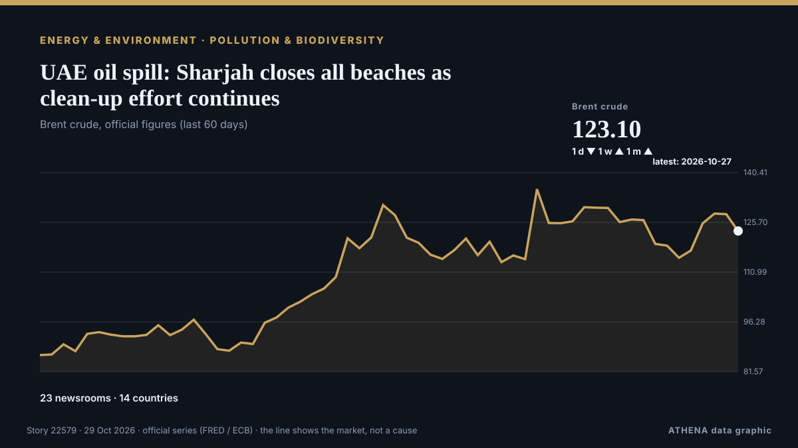

UAE oil spill: Sharjah closes all beaches as clean-up effort continues

UAE authorities are working to contain an oil spill from a supertanker in the Arabian Gulf, with Umm Al Quwain Municipality intensifying efforts to limit pollution and protect marine habitats. von The National
Unabhängig gemeldet von 24 Medien in 14 Ländern seit dem 22. Okt., zuerst von The National; die Berichterstattung flaut ab. ATHENA stuft das Risiko als erhöht ein (5.5/10), vor allem wegen der Schwere des beschriebenen Schadens und seiner geografischen und sektoralen Reichweite. Die Konfidenz liegt bei 90 % (hoch): 24 Medien bestätigen es unabhängig, bei einer mittleren Verlässlichkeit der Quellen von 79 %.
Warum es wichtig ist: Entwicklungen bei Energie und Rohstoffen beeinflussen Kraftstoff- und Strompreise, Versorgungssicherheit und Klimaziele.
Was sich geändert hat: 6 neue Berichte von 4 Redaktionen in den 24 Stunden bis 29. Okt..
Erste Schlagzeile: UAE: Oil Spill from Tanker Affects Beaches in Umm Al Quwain
Schlagzeilen werden auf Englisch angezeigt, wie veröffentlicht.
Auf einen Blick
Ausgewählt, bewertet und geschrieben nach der veröffentlichten Methodik von ATHENA. Kein Redakteur greift in einzelne Ereignisse ein. So entsteht ATHENA ›
| 22 Oct 23:34 UTC | 8 |
|---|---|
| 23 Oct 05:34 UTC | 9 |
| 23 Oct 11:34 UTC | 5 |
| 23 Oct 17:34 UTC | 1 |
| 23 Oct 23:34 UTC | 3 |
| 24 Oct 05:34 UTC | 1 |
| 24 Oct 11:34 UTC | 1 |
| 24 Oct 17:34 UTC | 0 |
| 24 Oct 23:34 UTC | 0 |
| 25 Oct 05:34 UTC | 0 |
| 25 Oct 11:34 UTC | 1 |
| 25 Oct 17:34 UTC | 0 |
| 25 Oct 23:34 UTC | 1 |
| 26 Oct 05:34 UTC | 5 |
| 26 Oct 11:34 UTC | 1 |
| 26 Oct 17:34 UTC | 1 |
| 26 Oct 23:34 UTC | 0 |
| 27 Oct 05:34 UTC | 1 |
| 27 Oct 11:34 UTC | 0 |
| 27 Oct 17:34 UTC | 1 |
| 27 Oct 23:34 UTC | 1 |
| 28 Oct 05:34 UTC | 2 |
| 28 Oct 11:34 UTC | 2 |
| 28 Oct 17:34 UTC | 0 |
| 28 Oct 23:34 UTC | 0 |
| 29 Oct 05:34 UTC | 3 |
| 23 Oct 06:41 UTC | 5.0 |
|---|---|
| 23 Oct 06:43 UTC | 5.7 |
| 23 Oct 13:55 UTC | 5.3 |
| 26 Oct 18:13 UTC | 5.7 |
| 30 Oct 09:57 UTC | 5.5 |
| 30 Oct 09:57 UTC | 5.5 |
Warum diese Zahlen
Bedeutung
Risiko
Konfidenz
Die Berichterstattung – wer berichtete, und wann
Schlagzeile wie veröffentlicht · öffnet das Original- The National · Vereinigte Arabische Emirate · United Arab EmiratesUAE confirms oil spill off coast causing strong fuel smell
- The National · Vereinigte Arabische Emirate · United Arab EmiratesUAE confirms oil spill off coast and temporarily closes Umm Al Quwain beaches
- Business Recorder · PakistanUAE says tanker oil spill affects beaches in Umm Al Quwain
- Arab News · Saudi-Arabien · Saudi ArabiaOil spill off UAE coast prompts beach closures, cleanup effort
- Middle East Eye · INTUAE announce temporary closure of Umm Al Quwain beaches
- Anadolu Agency (English) · Türkei · TurkeyUAE detects tanker oil spill affecting beaches in Umm Al Quwain
- Asharq Al-Awsat (English) · Saudi-Arabien · Saudi ArabiaUAE: Oil Spill from Tanker Affects Beaches in Umm Al Quwain
- The National · Vereinigte Arabische Emirate · United Arab EmiratesUAE tackles oil spill, Yemen warns of Houthi child recruitment and Oman strengthens UK investment ties
- Arab Times · KuwaitUAE Closes Umm Al Quwain Beaches After Tanker Oil Spill
- Middle East Eye · INTMorning update
- Gulf News · Vereinigte Arabische Emirate · United Arab EmiratesUAE mystery smells explained: How reports led to oil spill discovery
- Arabian Business · Vereinigte Arabische Emirate · United Arab EmiratesUAE confirms oil spill off Umm Al Quwain as source of mysterious smell
- NEWS.am (English) · Armenien · ArmeniaReuters: Oil spill from tanker detected off UAE coast
- Xinhua (English) — page reader · ChinaOil spill prompts closure of beaches in UAE's Umm Al Quwain
- Euronews English · Frankreich · FranceOil spill hits UAE beaches as tanker attacks multiply near Hormuz
- Gulf News · Vereinigte Arabische Emirate · United Arab EmiratesUAE oil spill: Umm Al Quwain steps up efforts to contain slick along emirate’s beaches
- Al-Monitor · Vereinigte Staaten · United StatesUAE battles tanker oil spill as war's environmental toll mounts
- Gulf News · Vereinigte Arabische Emirate · United Arab EmiratesSharjah temporarily closes Al Hamriyah Beach over oil spill concerns
- BBC News · Vereinigtes Königreich · United KingdomOil spill washes up on UAE beaches after tanker strike
- Gulf News · Vereinigte Arabische Emirate · United Arab EmiratesUAE residents’ evening update: Oil spill closes UAQ beaches, flight updates, Netanyahu’s West Bank move
- The New Arab · INTUAE reports oil spill from tanker as ships attacked during war
- Xinhua (English) — page reader · ChinaNorthern UAE beach closed as precaution after tanker oil spill
- Business Recorder · PakistanUAE reports oil spill from tanker
- Al Jazeera English · Katar · QatarMassive oil slick seen weeks after tanker struck off UAE’s coast
- The National · Vereinigte Arabische Emirate · United Arab EmiratesThe fight to save marine life: how specialists are tackling the oil spill off the UAE coast
- Gulf News · Vereinigte Arabische Emirate · United Arab EmiratesTanker oil spill in UAE: What we know so far about Umm Al Quwain beach closures and the smell
- Business Recorder · PakistanUAE's Ras Al Khaimah shuts all beaches as neighbours grapple with oil spill
- Al Jazeera English · Katar · QatarOil slick from tanker in Hormuz Strait washes up on UAE beaches
- Gulf News · Vereinigte Arabische Emirate · United Arab EmiratesUAE’s massive beach clean-up after oil spill concerns and mystery smell: All you need to know
- Oman Observer · OmanOil spill off UAE widens, satellite images show, prompting more beach closures
- The Straits Times · Singapur · SingaporeOil spill off UAE widens, prompting more beach closures
- Al-Monitor · Vereinigte Staaten · United StatesOil spill off UAE widens, satellite images show, prompting more beach closures
- Cyprus Mail · Zypern · CyprusUAE oil spill spreads, forcing more beach closures
- The Independent · Vereinigtes Königreich · United KingdomSatellite images show huge oil spill from damaged tanker that triggered beach closures across UAE
- ProtoThema English ·Oil spill from tanker off the United Arab Emirates spreads, beaches close
- The New Arab · INTOil spill off UAE widens, prompting more beach closures
- Gulf News · Vereinigte Arabische Emirate · United Arab EmiratesUAE oil spill: Beach clean-up update and advice for residents
- CGTN (World) · ChinaSatellite images show oil spill on UAE coast
- The New Arab · INTExperts warn of effects of slick as oil seen on UAE beach
- Al Jazeera English · Katar · QatarHormuz oil spill forces closure of UAE beaches